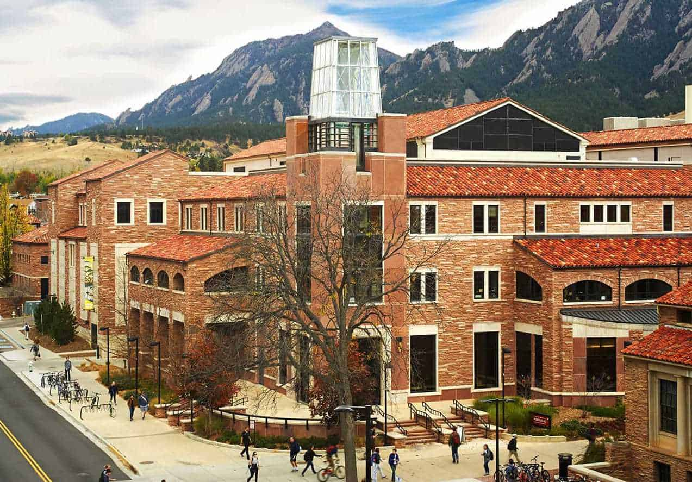

Creative Technology and Design Program
About the Program
The Creative Technology and Design (CTD) program at the University of Colorado Boulder's ATLAS Institute is an innovative, interdisciplinary program that combines technology, design, and creative problem-solving. The program prepares students to become leaders in the rapidly evolving field of creative technology, equipping them with the skills to design and develop solutions that address real-world challenges.
Program Highlights
Interdisciplinary Approach
Students learn to integrate knowledge from multiple disciplines, including computer science, engineering, design, and the arts, to create innovative solutions.
Hands-on Learning
The program emphasizes project-based learning, allowing students to apply their knowledge to real-world problems and develop practical skills.
State-of-the-Art Facilities
Students have access to cutting-edge technology and maker spaces, including 3D printers, laser cutters, and electronics labs.
Capstone Projects
The Nova Tent project is an example of the innovative work produced by CTD students. As part of their capstone experience, students work in teams to develop solutions to complex problems, applying their technical skills and creative thinking to create meaningful products and experiences.
Through projects like the Nova Tent, students demonstrate their ability to:
- Conduct thorough research and analysis
- Develop innovative design solutions
- Prototype and test their ideas
- Present and communicate their work effectively
- Work collaboratively in teams
Program Outcomes
Graduates of the Creative Technology and Design program are prepared for careers in:
- Product Design and Development
- User Experience Design
- Interactive Media
- Creative Technology
- Digital Fabrication
- Research and Development
The program's emphasis on both technical skills and creative thinking ensures that graduates are well-equipped to tackle the challenges of tomorrow's technology landscape.